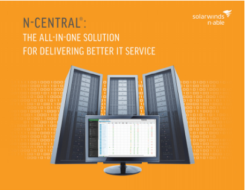
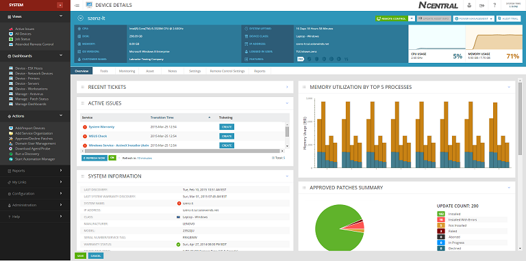

GIP site Wout Wynen



Als onderwerp van de CaseStudy heb ik de software n-able gekozen die mijn stagebedrijf Van Roey gebruikt.
Deze software is bedoeld om de gebruikers en de klanten hulp te bieden.
De software houdt zich vooral bezig met het vergemakkelijken van alledaagse taken die door het personeel gedaan moeten worden.
Als men bijvoorbeeld s’morgens op het werk aankomt, is het de bedoeling dat alle computers van klanten en personeel een systeemcheck krijgen.
Dit wordt automatisch gedaan door de N-able software.
Het personeel moet bij het opstarten van de computers ook inloggen op het programma om zo een overzicht te krijgen van welke collega’s er niet op het werk zijn of eventueel te laat zijn door file.

Wanneer klanten hardware binnenbrengen, wordt dit automatisch verbonden met de N-able software.
Deze sofware zorgt voor de beveiliging in verband met virussen en spyware.
Ook wordt er automatisch een backup genomen van de harde schijf om te voorkomen dat de klant zijn gegevens verloren gaan.
Wanneer het personeel reparaties wil uitvoeren aan een computer van een klant, moet dit eerst op het programma geregistreerd worden, zodat iedereen hiervan op de hoogte is.
Het krijgen van notificaties op je mobiele apparaten is ook een heel handige functie aan de software.
Het personeel moet een applicatie downloaden dat gelinkt is aan het programma.
Hierdoor krijgen ze telkens meldingen op hun apparaat wanneer er bv. iets mis is met de computer, dat de netwerkverbinding niet optimaal is, enz…
Dan is er nog een laatste maar zeker niet te vergeten functie van de tool. Als er klanten met een informatica probleem zitten, bellen ze meestal naar de informatica afdeling bij Van Roey. Dit gebeurt ook via de N-able software.
Het personeel krijgt een melding op zijn computer dat er een klant belt. Hiermee kunnen ze dan ook opnemen of de klanten doorverbinden met de juiste persoon.
Van Roey zelf werkt er nog niet lang mee, maar ze zijn nu al heel tevreden over de prestaties die het programma heeft geleverd. Het bespaart de firma veel tijd en kosten.

Voor de korte tijd dat ik ermee gewerkt heb en deze software echt gebruikt heb, vind ik het zeker een aanrader voor grote bedrijven.
Het spaart veel tijd uit en zorgt ervoor dat iedereen optimaal samenwerkt met elkaar.
Een groot nadeel is wel dat er nergens vermeld staat hoeveel deze software kost, en dus je ook niet kan zien op voorhand of dit de moeite wel is.
Zeker geen aanrader voor mensen die zelfstandig alleen werken of een kleine onderneming zijn.
Verder niets slecht op te zeggen. Deze software kan wel eens heel bekend worden als grote bedrijven dit gaan gebruiken.
4 Mar 2016